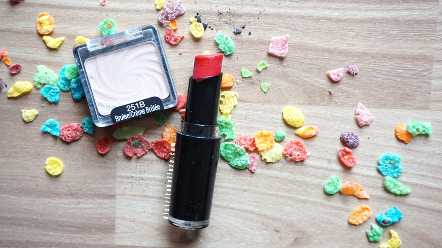
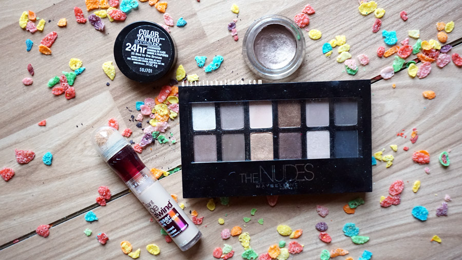
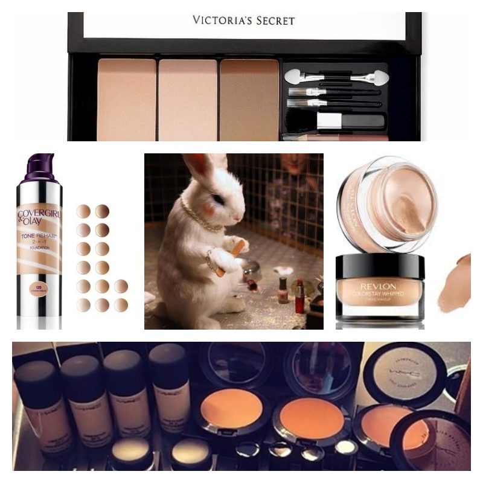

Pruebas en animales



Compañias que exprimentan
| Compañias: |
| Vicotria secret´s |
| Revlon |
| Covegirl |
| M.A.C. |
Que son las pruebas con animales:
Una de las pruebas que se hacen más comúnmente es el test de Draize, el cual se hace desde hace más de 45 años y consiste en aplicarle a los animales (regularmente conejos) las sustancias directamente en los ojos por siete días. Muchos quedan ciegos y al final todos son sacrificados.